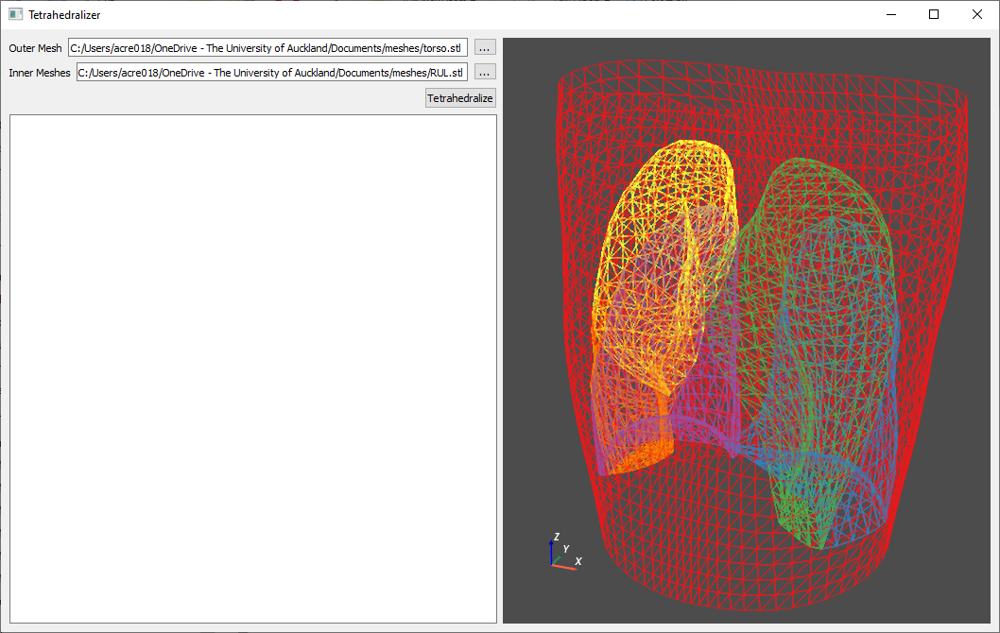

Tetrahedralizer¶
Tetrahedralizer is an app and python library for automating the process of converting surface meshes to volumetric meshes.
Documentation is available at: https://abi-eit.github.io/tetrahedralizer/
Tetrahedralizer is able to create a constrained tetrahedralization from any number of input surfaces defining the boundaries of sections within the output mesh. The output mesh is saved in a .vtu file (VTK unstructured grid) which preserves the individual sections and can be easily imported into other programs for further processing. The entire process is configurable through a user editable configuraiton file.
The individual features are also available to use through the Tetrahedralizer API.
Features¶
Mesh fixing with PyMeshfix
Removal of shared mesh faces
Boolean operations with PyMeshlab
Tetrahedralization with gmsh
Visualization with PyVista
Automated tetrahedralization of multi-surface meshes
Installation¶
Installation of Tetrahedralizer requires that you have python installed on your computer. Once python is installed type the following command into your terminal:
$ pip install git+https://github.com/ABI-EIT/tetrahedralizer
To install the GUI app, run:
$ python -m tetrahedralizer --install tetrahedralizer_qt
This will create a folder containing the installation of the Tetrahedralizer GUI app in your current directory. Run the app using tetrahedralizer_qt.exe contained within this folder.
Quick Start¶
To use the Tetrahedralizer app, simply select one outer mesh, representing the outermost boundary of the desired output mesh, and any number of inner meshes, representing the boundaries of inner sections of the output mesh. Click Tetrahedralize, and the automated process will begin, with progress displayed in the text box on the left had side of the screen. When finished, the resulting tetrahedralized mesh will be saved as a .vtu file in the output directory of the Tetrahedralizer installation.